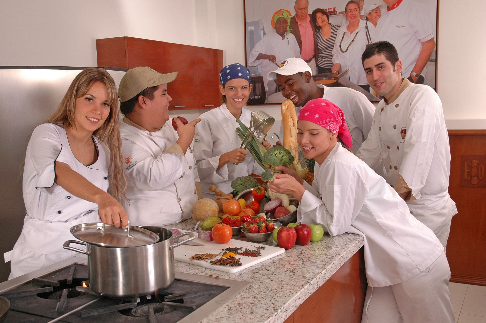

Founded by Sanjiv solanki, began as a small family-owned pizzeria in Neemuch. The story of PizzaPal began in 2011 when Sanjiv solanki opened his first pizzeria in his hometown of Neemuch, India. Sanjiv was inspired by his own search for delicious pizza options and wondered if there was a better way of doing pizza and business. He envisioned a pizzeria where everyone could get exactly what they wanted, made fresh on demand. In 2013, PizzaPal opened its first franchise outlet, and by 2017, it had crossed 100 outlets all over India. As of today, PizzaPal has over 600 outlets across India, with the most recent one opening in London 1.Over the years, our commitment to excellence and the overwhelming support of our customers have allowed us to grow into a beloved pizza destination.
Our Chefs
At PizzaPal, we believe in using the freshest ingredients, creating delectable flavor combinations, and providing exceptional service. Every pizza is a work of art, and we take pride in delivering an unforgettable dining experience to our customers.